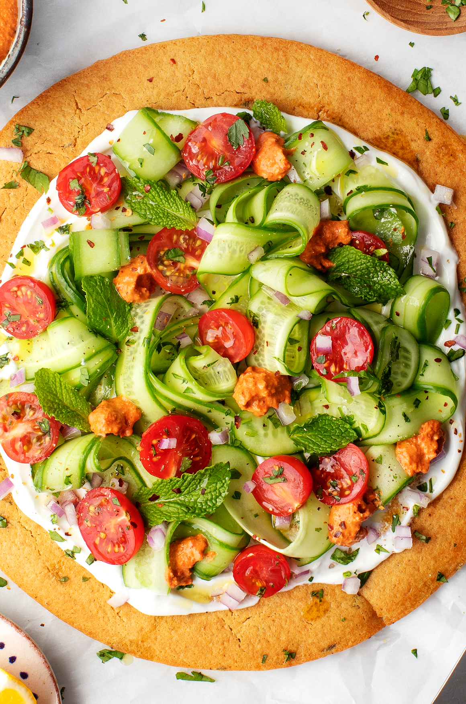
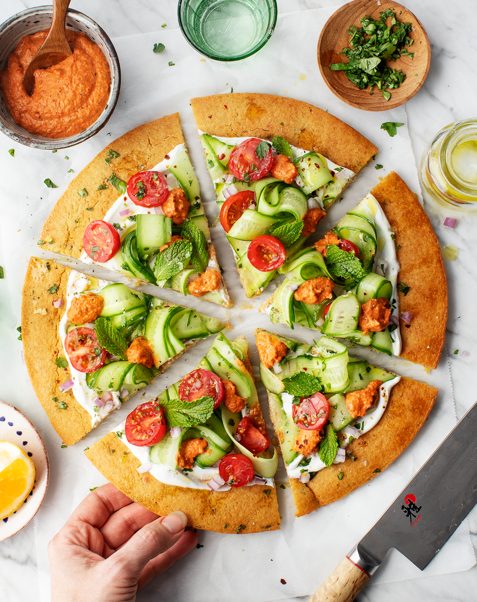

There’s not actually falafel in here – rather, the crust is made from chickpea flour (like socca) and is spiced with falafel seasonings such as cumin, coriander, chili powder, garlic, cilantro, and parsley. The flatbreads are topped with fresh Mediterranean toppings and dolloped with red pepper muhammara that I listed as optional below, but it’s really not optional because it’s so delicious!
If you want to make this recipe with someone else, Liz suggests that one person make the flatbread and that the other make the muhammara. (To make this vegan, the muhammara can be used as the sauce base instead of the yogurt).
These are so fresh and delicious – I hope you enjoy these flatbreads as much as we did!

There are so many topping options for this pizza. I smeared Yogurt sauce on mine and topped it with chopped cucumbers (or peeled ribbons like I did), chopped red tomatoes and onions, and finished with sprinkled fresh herbs (cilantro/parsley/mint). Don't forget lemon wedges, for serving!
Or, you can use my Red Pepper Muhammara as a dipping sauce.

1. In a large bowl, whisk together the chickpea flour, salt, garlic, parsley, cilantro, cumin, coriander, chili powder, lemon juice, 2 cups water, and 6 tablespoons of the olive oil. Let the mixture soak for 30 to 60 minutes to hydrate the flour.
2. Preheat the broiler with the rack in the center position.
3. Place a 10-inch cast-iron skillet in the oven to heat up, about 5 minutes. Carefully remove the pan. Swirl in 1 tablespoon of oil to coat the bottom, then pour in half the batter. Tilt the pan until the batter is evenly spread. Return the pan to the oven and broil for 5 to 15 minutes, until the edges are brown and toasty (broilers tend to vary widely in heat/temperature from oven to oven).
4. Remove the pan from the oven and gently slide the flatbread onto a plate. Repeat with the remaining batter to make a second flatbread.
5. Smear the flatbreads with yogurt and top with desired toppings and dollops of the muhammara, if desired. Drizzle with olive oil and season generously with salt and pepper.